An attempt to speed up flash add greedy
DongyueXie
2022-12-27
Last updated: 2022-12-27
Checks: 7 0
Knit directory: gsmash/
This reproducible R Markdown analysis was created with workflowr (version 1.7.0). The Checks tab describes the reproducibility checks that were applied when the results were created. The Past versions tab lists the development history.
Great! Since the R Markdown file has been committed to the Git repository, you know the exact version of the code that produced these results.
Great job! The global environment was empty. Objects defined in the global environment can affect the analysis in your R Markdown file in unknown ways. For reproduciblity it’s best to always run the code in an empty environment.
The command set.seed(20220606) was run prior to running
the code in the R Markdown file. Setting a seed ensures that any results
that rely on randomness, e.g. subsampling or permutations, are
reproducible.
Great job! Recording the operating system, R version, and package versions is critical for reproducibility.
Nice! There were no cached chunks for this analysis, so you can be confident that you successfully produced the results during this run.
Great job! Using relative paths to the files within your workflowr project makes it easier to run your code on other machines.
Great! You are using Git for version control. Tracking code development and connecting the code version to the results is critical for reproducibility.
The results in this page were generated with repository version 7ac8eee. See the Past versions tab to see a history of the changes made to the R Markdown and HTML files.
Note that you need to be careful to ensure that all relevant files for
the analysis have been committed to Git prior to generating the results
(you can use wflow_publish or
wflow_git_commit). workflowr only checks the R Markdown
file, but you know if there are other scripts or data files that it
depends on. Below is the status of the Git repository when the results
were generated:
Ignored files:
Ignored: .Rhistory
Ignored: .Rproj.user/
Note that any generated files, e.g. HTML, png, CSS, etc., are not included in this status report because it is ok for generated content to have uncommitted changes.
These are the previous versions of the repository in which changes were
made to the R Markdown
(analysis/attempt_to_speed_up_add_greedy.Rmd) and HTML
(docs/attempt_to_speed_up_add_greedy.html) files. If you’ve
configured a remote Git repository (see ?wflow_git_remote),
click on the hyperlinks in the table below to view the files as they
were in that past version.
| File | Version | Author | Date | Message |
|---|---|---|---|---|
| Rmd | 7ac8eee | DongyueXie | 2022-12-27 | wflow_publish("analysis/attempt_to_speed_up_add_greedy.Rmd") |
Introduction
In splitting PMF, each iteration needs an add greedy step of flash.
This step involves an initialization step of rank-1 factorization which can be time consuming. On the other hand, the K usually does not change much after certain number of iterations. So I decided to see if I can use the same initialization for the add greedy if the K does not change and set Kmax = 1 in add_greedy in iterations so that at most 1 factor is added each iteration.
IN addition, I set default maxiter of vga to be 1 to speed up iterations.
library(stm)
set.seed(12345)
N = 10000
p = 100
K = 3
Ftrue = matrix(0,nrow=p,ncol=K)
Ftrue[1:20,1] = 5
Ftrue[21:40,2] = 2
Ftrue[41:60,3] = 1
Ltrue = pmax(matrix(rnorm(N*K), ncol=K),0)
Lambda = exp(tcrossprod(Ltrue,Ftrue))
Y = matrix(rpois(N*p,Lambda),nrow=N,ncol=p)
fit1 = splitting_PMF_flashier(Y,verbose=TRUE,
ebnm.fn = c(ebnm::ebnm_point_exponential, ebnm::ebnm_point_normal),
add_greedy_init = 'new_init',add_greedy_Kmax = 1,
printevery = 1,
loadings_sign = 1,maxiter = 100,n_cores = 10)Initializing...Solving VGA for column 1...running initial flash fit
[1] "Running iterations..."
[1] "iter 1, ELBO=-2076127.74564, K=6"
[1] "iter 2, ELBO=-2016816.95943, K=5"
--Estimate of factor 6 is numerically zero!
--Estimate of factor 6 is numerically zero!
[1] "iter 3, ELBO=-1964664.97333, K=5"
--Estimate of factor 6 is numerically zero!
--Estimate of factor 6 is numerically zero!
[1] "iter 4, ELBO=-1928981.79802, K=5"
--Estimate of factor 6 is numerically zero!
--Estimate of factor 6 is numerically zero!
[1] "iter 5, ELBO=-1905978.34881, K=5"
--Estimate of factor 6 is numerically zero!
--Estimate of factor 6 is numerically zero!
[1] "iter 6, ELBO=-1885867.42023, K=5"
[1] "iter 7, ELBO=-1870755.59885, K=5"
[1] "iter 8, ELBO=-1857385.33451, K=5"
[1] "iter 9, ELBO=-1846061.15693, K=5"
[1] "iter 10, ELBO=-1835939.75493, K=5"
[1] "iter 11, ELBO=-1826886.50023, K=5"
[1] "iter 12, ELBO=-1818720.96811, K=5"
[1] "iter 13, ELBO=-1811387.79893, K=5"
[1] "iter 14, ELBO=-1804793.8011, K=5"
[1] "iter 15, ELBO=-1799071.2729, K=5"
--Estimate of factor 4 is numerically zero!
--Estimate of factor 4 is numerically zero!
[1] "iter 16, ELBO=-1794105.47488, K=4"
--Estimate of factor 4 is numerically zero!
--Estimate of factor 4 is numerically zero!
[1] "iter 17, ELBO=-1789710.97652, K=3"
[1] "iter 18, ELBO=-1785852.46854, K=3"
[1] "iter 19, ELBO=-1782450.01871, K=3"
[1] "iter 20, ELBO=-1779418.59074, K=3"
[1] "iter 21, ELBO=-1776703.46615, K=3"
[1] "iter 22, ELBO=-1774264.08083, K=3"
[1] "iter 23, ELBO=-1772062.12194, K=3"
[1] "iter 24, ELBO=-1770066.58459, K=3"
[1] "iter 25, ELBO=-1768253.40608, K=3"
[1] "iter 26, ELBO=-1766602.01164, K=3"
[1] "iter 27, ELBO=-1765094.70615, K=3"
[1] "iter 28, ELBO=-1763716.15166, K=3"
[1] "iter 29, ELBO=-1762452.98136, K=3"
[1] "iter 30, ELBO=-1761293.4903, K=3"
[1] "iter 31, ELBO=-1760227.38714, K=3"
[1] "iter 32, ELBO=-1759245.59056, K=3"
[1] "iter 33, ELBO=-1758340.0613, K=3"
[1] "iter 34, ELBO=-1757503.66165, K=3"
[1] "iter 35, ELBO=-1756730.03745, K=3"
[1] "iter 36, ELBO=-1756013.51814, K=3"
[1] "iter 37, ELBO=-1755349.0316, K=3"
[1] "iter 38, ELBO=-1754732.03137, K=3"
[1] "iter 39, ELBO=-1754158.43394, K=3"
[1] "iter 40, ELBO=-1753624.56476, K=3"
[1] "iter 41, ELBO=-1753127.11128, K=3"
[1] "iter 42, ELBO=-1752663.08236, K=3"
[1] "iter 43, ELBO=-1752229.77254, K=3"
[1] "iter 44, ELBO=-1751824.73108, K=3"
[1] "iter 45, ELBO=-1751445.7346, K=3"
[1] "iter 46, ELBO=-1751090.76309, K=3"
[1] "iter 47, ELBO=-1750757.97877, K=3"
[1] "iter 48, ELBO=-1750445.70751, K=3"
[1] "iter 49, ELBO=-1750152.42206, K=3"
[1] "iter 50, ELBO=-1749876.72754, K=3"
[1] "iter 51, ELBO=-1749617.34846, K=3"
[1] "iter 52, ELBO=-1749373.11699, K=3"
[1] "iter 53, ELBO=-1749142.96261, K=3"
[1] "iter 54, ELBO=-1748925.90307, K=3"
[1] "iter 55, ELBO=-1748721.03587, K=3"
[1] "iter 56, ELBO=-1748527.53111, K=3"
[1] "iter 57, ELBO=-1748344.62468, K=3"
[1] "iter 58, ELBO=-1748171.61243, K=3"
[1] "iter 59, ELBO=-1748007.84474, K=3"
[1] "iter 60, ELBO=-1747852.72177, K=3"
[1] "iter 61, ELBO=-1747705.68905, K=3"
[1] "iter 62, ELBO=-1747566.23361, K=3"
[1] "iter 63, ELBO=-1747433.88046, K=3"
[1] "iter 64, ELBO=-1747308.18927, K=3"
[1] "iter 65, ELBO=-1747188.75166, K=3"
[1] "iter 66, ELBO=-1747075.1884, K=3"
[1] "iter 67, ELBO=-1746967.14711, K=3"
[1] "iter 68, ELBO=-1746864.30008, K=3"
[1] "iter 69, ELBO=-1746766.34228, K=3"
[1] "iter 70, ELBO=-1746672.98961, K=3"
[1] "iter 71, ELBO=-1746583.97718, K=3"
[1] "iter 72, ELBO=-1746499.05799, K=3"
[1] "iter 73, ELBO=-1746418.00129, K=3"
[1] "iter 74, ELBO=-1746340.59164, K=3"
[1] "iter 75, ELBO=-1746266.62757, K=3"
[1] "iter 76, ELBO=-1746195.92052, K=3"
[1] "iter 77, ELBO=-1746128.2941, K=3"
[1] "iter 78, ELBO=-1746063.58302, K=3"
[1] "iter 79, ELBO=-1746001.63232, K=3"
[1] "iter 80, ELBO=-1745942.29665, K=3"
[1] "iter 81, ELBO=-1745885.43958, K=3"
[1] "iter 82, ELBO=-1745830.93303, K=3"
[1] "iter 83, ELBO=-1745778.65661, K=3"
[1] "iter 84, ELBO=-1745728.49711, K=3"
[1] "iter 85, ELBO=-1745680.34808, K=3"
[1] "iter 86, ELBO=-1745634.10925, K=3"
[1] "iter 87, ELBO=-1745589.68623, K=3"
[1] "iter 88, ELBO=-1745546.99007, K=3"
[1] "iter 89, ELBO=-1745505.93689, K=3"
[1] "iter 90, ELBO=-1745466.44755, K=3"
[1] "iter 91, ELBO=-1745428.44744, K=3"
[1] "iter 92, ELBO=-1745391.866, K=3"
[1] "iter 93, ELBO=-1745356.63663, K=3"
[1] "iter 94, ELBO=-1745322.69639, K=3"
[1] "iter 95, ELBO=-1745289.98574, K=3"
[1] "iter 96, ELBO=-1745258.44834, K=3"
[1] "iter 97, ELBO=-1745228.0309, K=3"
[1] "iter 98, ELBO=-1745198.6829, K=3"
[1] "iter 99, ELBO=-1745170.35657, K=3"
[1] "iter 100, ELBO=-1745143.00657, K=3"fit2 = splitting_PMF_flashier(Y,verbose=TRUE,
ebnm.fn = c(ebnm::ebnm_point_exponential, ebnm::ebnm_point_normal),
add_greedy_init = 'previous_init',add_greedy_Kmax = 1,
printevery = 1,
loadings_sign = 1,maxiter = 100,n_cores = 10)Initializing...Solving VGA for column 1...running initial flash fit
[1] "Running iterations..."
[1] "iter 1, ELBO=-2076127.74564, K=6"
[1] "iter 2, ELBO=-2016816.95943, K=5"
--Estimate of factor 6 is numerically zero!
--Estimate of factor 6 is numerically zero!
[1] "iter 3, ELBO=-1964664.97333, K=5"
--Estimate of factor 6 is numerically zero!
--Estimate of factor 6 is numerically zero!
[1] "iter 4, ELBO=-1928981.79802, K=5"
--Estimate of factor 6 is numerically zero!
--Estimate of factor 6 is numerically zero!
[1] "iter 5, ELBO=-1905978.34881, K=5"
--Estimate of factor 6 is numerically zero!
--Estimate of factor 6 is numerically zero!
[1] "iter 6, ELBO=-1885867.42023, K=5"
[1] "iter 7, ELBO=-1870755.59885, K=5"
[1] "iter 8, ELBO=-1857385.33451, K=5"
[1] "iter 9, ELBO=-1846061.15693, K=5"
[1] "iter 10, ELBO=-1835939.75493, K=5"
[1] "iter 11, ELBO=-1826886.50023, K=5"
[1] "iter 12, ELBO=-1818720.96811, K=5"
[1] "iter 13, ELBO=-1811387.79893, K=5"
[1] "iter 14, ELBO=-1804793.8011, K=5"
[1] "iter 15, ELBO=-1799071.2729, K=5"
--Estimate of factor 4 is numerically zero!
--Estimate of factor 4 is numerically zero!
[1] "iter 16, ELBO=-1794105.47488, K=4"
--Estimate of factor 4 is numerically zero!
--Estimate of factor 4 is numerically zero!
[1] "iter 17, ELBO=-1789710.97652, K=3"
[1] "iter 18, ELBO=-1785852.46854, K=3"
[1] "iter 19, ELBO=-1782450.01871, K=3"
[1] "iter 20, ELBO=-1779418.59074, K=3"
[1] "iter 21, ELBO=-1776703.46615, K=3"
[1] "iter 22, ELBO=-1774264.08083, K=3"
[1] "iter 23, ELBO=-1772062.12194, K=3"
[1] "iter 24, ELBO=-1770066.58459, K=3"
[1] "iter 25, ELBO=-1768253.40608, K=3"
[1] "iter 26, ELBO=-1766602.01164, K=3"
[1] "iter 27, ELBO=-1765094.70615, K=3"
[1] "iter 28, ELBO=-1763716.15166, K=3"
[1] "iter 29, ELBO=-1762452.98136, K=3"
[1] "iter 30, ELBO=-1761293.4903, K=3"
[1] "iter 31, ELBO=-1760227.38714, K=3"
[1] "iter 32, ELBO=-1759245.59056, K=3"
[1] "iter 33, ELBO=-1758340.0613, K=3"
[1] "iter 34, ELBO=-1757503.66165, K=3"
[1] "iter 35, ELBO=-1756730.03745, K=3"
[1] "iter 36, ELBO=-1756013.51814, K=3"
[1] "iter 37, ELBO=-1755349.0316, K=3"
[1] "iter 38, ELBO=-1754732.03137, K=3"
[1] "iter 39, ELBO=-1754158.43394, K=3"
[1] "iter 40, ELBO=-1753624.56476, K=3"
[1] "iter 41, ELBO=-1753127.11128, K=3"
[1] "iter 42, ELBO=-1752663.08236, K=3"
[1] "iter 43, ELBO=-1752229.77254, K=3"
[1] "iter 44, ELBO=-1751824.73108, K=3"
[1] "iter 45, ELBO=-1751445.7346, K=3"
[1] "iter 46, ELBO=-1751090.76309, K=3"
[1] "iter 47, ELBO=-1750757.97877, K=3"
[1] "iter 48, ELBO=-1750445.70751, K=3"
[1] "iter 49, ELBO=-1750152.42206, K=3"
[1] "iter 50, ELBO=-1749876.72754, K=3"
[1] "iter 51, ELBO=-1749617.34846, K=3"
[1] "iter 52, ELBO=-1749373.11699, K=3"
[1] "iter 53, ELBO=-1749142.96261, K=3"
[1] "iter 54, ELBO=-1748925.90307, K=3"
[1] "iter 55, ELBO=-1748721.03587, K=3"
[1] "iter 56, ELBO=-1748527.53111, K=3"
[1] "iter 57, ELBO=-1748344.62468, K=3"
[1] "iter 58, ELBO=-1748171.61243, K=3"
[1] "iter 59, ELBO=-1748007.84474, K=3"
[1] "iter 60, ELBO=-1747852.72177, K=3"
[1] "iter 61, ELBO=-1747705.68905, K=3"
[1] "iter 62, ELBO=-1747566.23361, K=3"
[1] "iter 63, ELBO=-1747433.88046, K=3"
[1] "iter 64, ELBO=-1747308.18927, K=3"
[1] "iter 65, ELBO=-1747188.75166, K=3"
[1] "iter 66, ELBO=-1747075.1884, K=3"
[1] "iter 67, ELBO=-1746967.14711, K=3"
[1] "iter 68, ELBO=-1746864.30008, K=3"
[1] "iter 69, ELBO=-1746766.34228, K=3"
[1] "iter 70, ELBO=-1746672.98961, K=3"
[1] "iter 71, ELBO=-1746583.97718, K=3"
[1] "iter 72, ELBO=-1746499.05799, K=3"
[1] "iter 73, ELBO=-1746418.00129, K=3"
[1] "iter 74, ELBO=-1746340.59164, K=3"
[1] "iter 75, ELBO=-1746266.62757, K=3"
[1] "iter 76, ELBO=-1746195.92052, K=3"
[1] "iter 77, ELBO=-1746128.2941, K=3"
[1] "iter 78, ELBO=-1746063.58302, K=3"
[1] "iter 79, ELBO=-1746001.63232, K=3"
[1] "iter 80, ELBO=-1745942.29665, K=3"
[1] "iter 81, ELBO=-1745885.43958, K=3"
[1] "iter 82, ELBO=-1745830.93303, K=3"
[1] "iter 83, ELBO=-1745778.65661, K=3"
[1] "iter 84, ELBO=-1745728.49711, K=3"
[1] "iter 85, ELBO=-1745680.34808, K=3"
[1] "iter 86, ELBO=-1745634.10925, K=3"
[1] "iter 87, ELBO=-1745589.68623, K=3"
[1] "iter 88, ELBO=-1745546.99007, K=3"
[1] "iter 89, ELBO=-1745505.93689, K=3"
[1] "iter 90, ELBO=-1745466.44755, K=3"
[1] "iter 91, ELBO=-1745428.44744, K=3"
[1] "iter 92, ELBO=-1745391.866, K=3"
[1] "iter 93, ELBO=-1745356.63663, K=3"
[1] "iter 94, ELBO=-1745322.69639, K=3"
[1] "iter 95, ELBO=-1745289.98574, K=3"
[1] "iter 96, ELBO=-1745258.44834, K=3"
[1] "iter 97, ELBO=-1745228.0309, K=3"
[1] "iter 98, ELBO=-1745198.6829, K=3"
[1] "iter 99, ELBO=-1745170.35657, K=3"
[1] "iter 100, ELBO=-1745143.00657, K=3"summary_fit = function(fit){
plot(fit$K_trace,ylab='K',xlab='iteration')
plot(fit$elbo_trace,ylab='elbo',xlab='iteration')
idx = sample(1:prod(dim(Y)),min(1e5,prod(dim(Y))))
plot(fitted(fit$fit_flash)[idx],tcrossprod(Ltrue,Ftrue)[idx],col='grey80',xlab='fitted',ylab='true')
abline(a=0,b=1)
for(k in 1:fit$fit_flash$n.factors){
plot(fit$fit_flash$F.pm[,k],type='l',xlab='',ylab='',main=paste('factor:',k))
}
print(paste('pve=',paste0(round(fit$fit_flash$pve,3),collapse = ',')))
print(paste('elbo=',round(fit$elbo,3)))
print(paste('run time: ',round(fit$run_time,3)))
print(round(unlist(lapply(fit$run_time_break_down,mean)),3))
}new init
summary_fit(fit1) 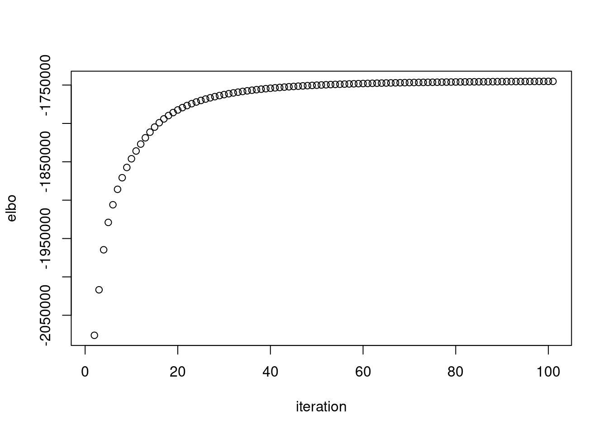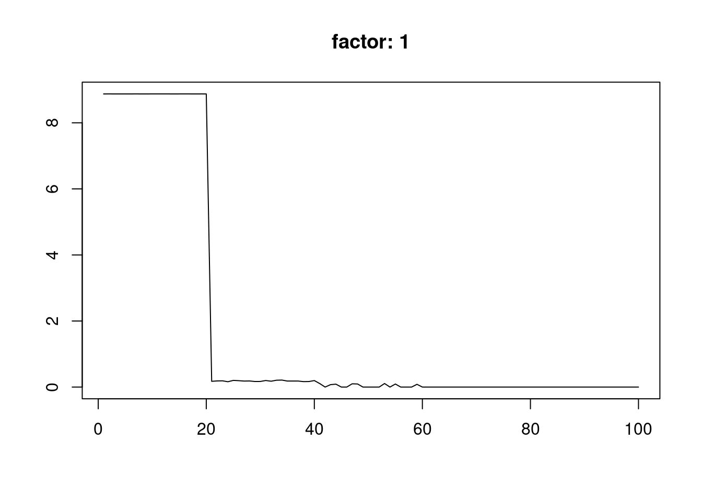
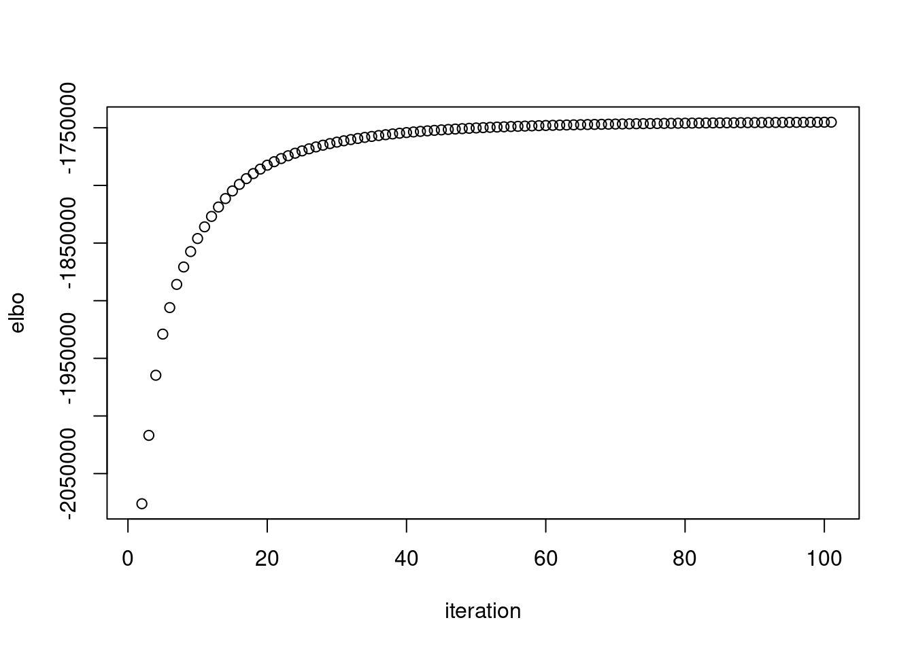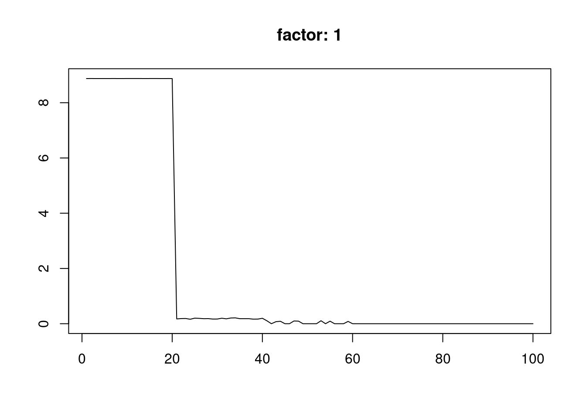 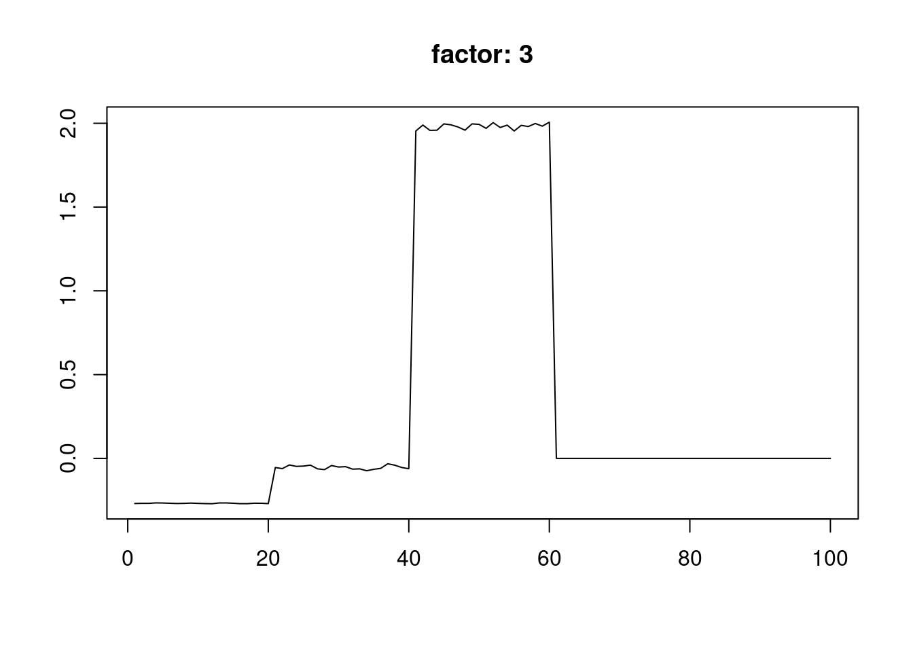
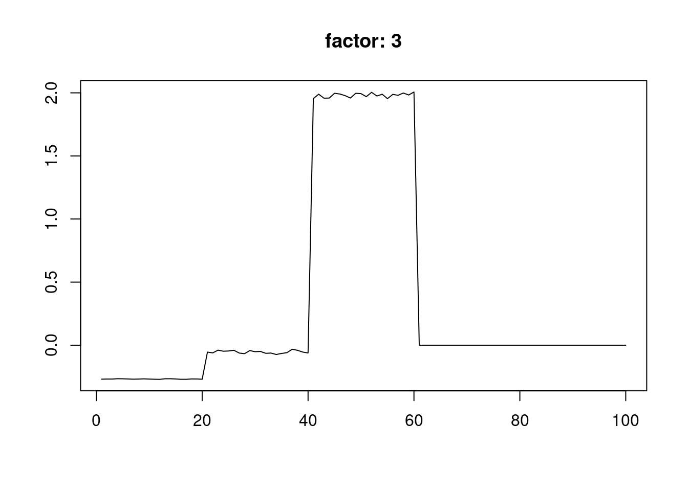
[1] "pve= 0.838,0.124,0.028"
[1] "elbo= -1745143.007"
[1] "run time: 3.161"
run_time_vga_init run_time_flash_init
3.258 5.012
run_time_vga run_time_flash_init_factor
0.130 0.061
run_time_flash_greedy run_time_flash_backfitting
0.709 0.814
run_time_flash_nullcheck
0.034 previous init
summary_fit(fit2)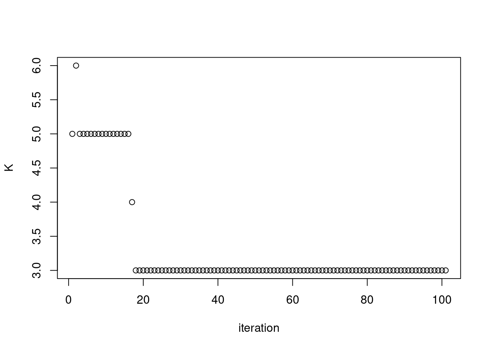 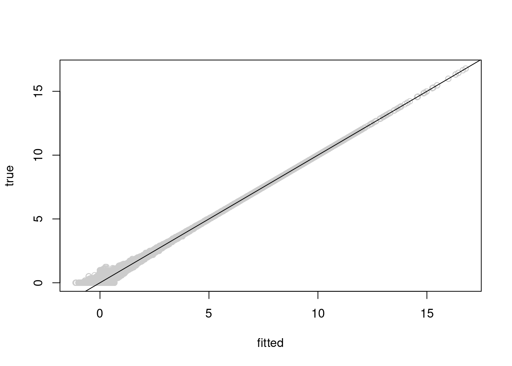
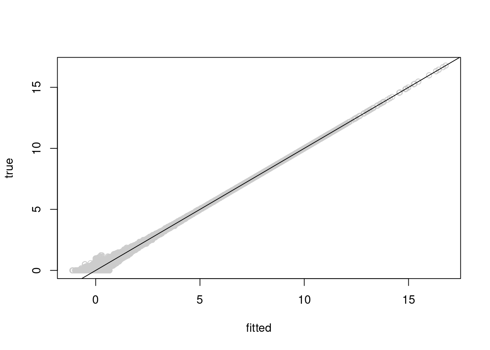 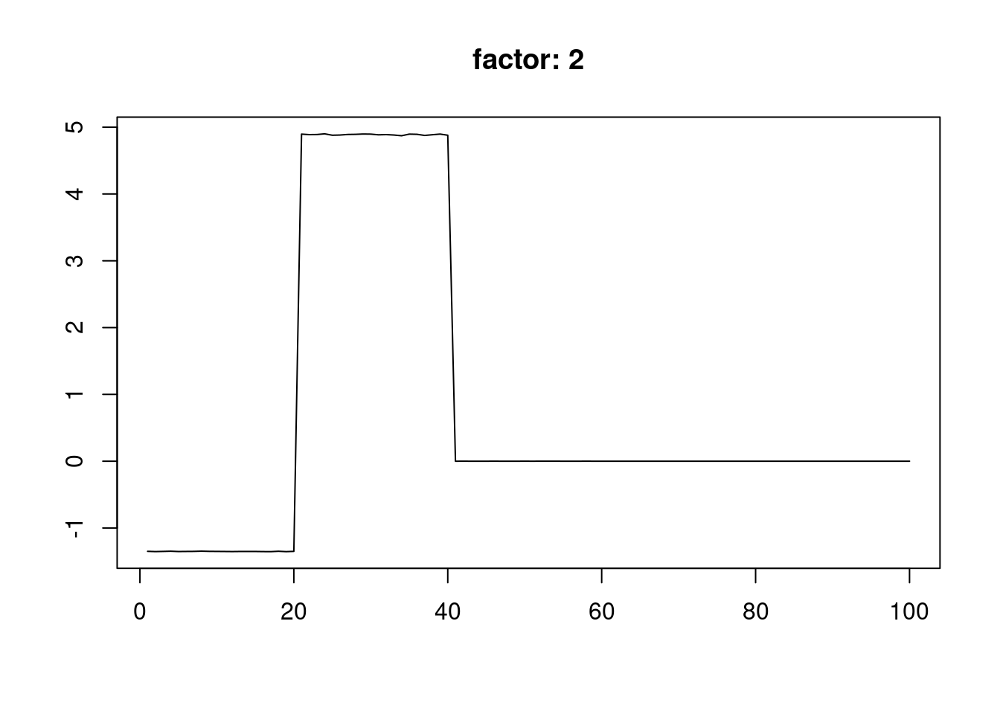
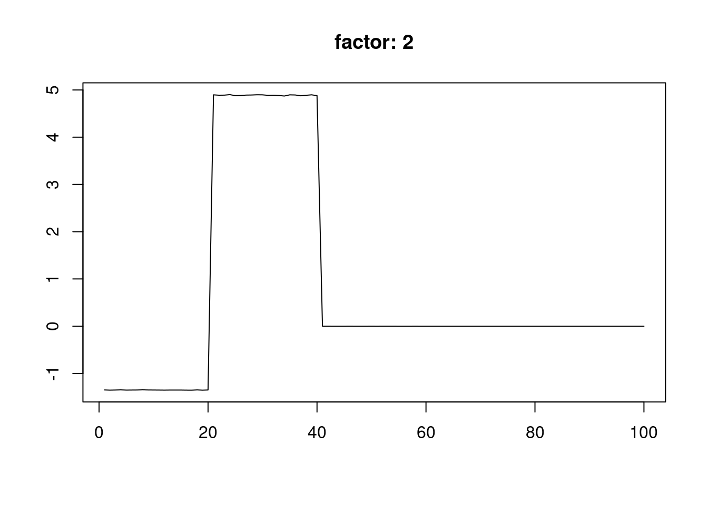
[1] "pve= 0.838,0.124,0.028"
[1] "elbo= -1745143.007"
[1] "run time: 2.167"
run_time_vga_init run_time_flash_init
2.041 4.536
run_time_vga run_time_flash_init_factor
0.131 0.055
run_time_flash_greedy run_time_flash_backfitting
0.174 0.775
run_time_flash_nullcheck
0.032 other thoughts
I have also added add_greedy_every option, such that the
flash.add.greedy need not running every iteration.
The acceleration method for EM like daarem, squarem are not very applicable in this setting because (a) K is changing, (b) elbo calculation needs KL term from ebnm, (c) to0 many parameters.
Maybe look at the extrapolation methods.
sessionInfo()R version 4.2.2 Patched (2022-11-10 r83330)
Platform: x86_64-pc-linux-gnu (64-bit)
Running under: Ubuntu 22.04.1 LTS
Matrix products: default
BLAS: /usr/lib/x86_64-linux-gnu/openblas-pthread/libblas.so.3
LAPACK: /usr/lib/x86_64-linux-gnu/openblas-pthread/libopenblasp-r0.3.20.so
locale:
[1] LC_CTYPE=en_US.UTF-8 LC_NUMERIC=C
[3] LC_TIME=en_US.UTF-8 LC_COLLATE=en_US.UTF-8
[5] LC_MONETARY=en_US.UTF-8 LC_MESSAGES=en_US.UTF-8
[7] LC_PAPER=en_US.UTF-8 LC_NAME=C
[9] LC_ADDRESS=C LC_TELEPHONE=C
[11] LC_MEASUREMENT=en_US.UTF-8 LC_IDENTIFICATION=C
attached base packages:
[1] stats graphics grDevices utils datasets methods base
other attached packages:
[1] stm_1.1.8 workflowr_1.7.0
loaded via a namespace (and not attached):
[1] Rcpp_1.0.9 horseshoe_0.2.0 invgamma_1.1 lattice_0.20-45
[5] NNLM_0.4.4 getPass_0.2-2 ps_1.7.2 rprojroot_2.0.3
[9] digest_0.6.31 utf8_1.2.2 truncnorm_1.0-8 R6_2.5.1
[13] evaluate_0.19 highr_0.9 httr_1.4.4 ggplot2_3.4.0
[17] pillar_1.8.1 rlang_1.0.6 wavethresh_4.7.2 data.table_1.14.6
[21] rstudioapi_0.14 ebnm_1.0-11 irlba_2.3.5.1 nloptr_2.0.3
[25] whisker_0.4.1 callr_3.7.3 jquerylib_0.1.4 Matrix_1.5-3
[29] rmarkdown_2.19 splines_4.2.2 smashr_1.3-6 stringr_1.5.0
[33] munsell_0.5.0 mixsqp_0.3-48 compiler_4.2.2 httpuv_1.6.7
[37] xfun_0.35 pkgconfig_2.0.3 SQUAREM_2021.1 htmltools_0.5.4
[41] tidyselect_1.2.0 tibble_3.1.8 matrixStats_0.63.0 fansi_1.0.3
[45] dplyr_1.0.10 later_1.3.0 MASS_7.3-58.1 bitops_1.0-7
[49] grid_4.2.2 jsonlite_1.8.4 gtable_0.3.1 lifecycle_1.0.3
[53] git2r_0.30.1 magrittr_2.0.3 scales_1.2.1 cli_3.4.1
[57] stringi_1.7.8 cachem_1.0.6 ebpm_0.0.1.3 fs_1.5.2
[61] promises_1.2.0.1 flashier_0.2.34 bslib_0.4.2 vctrs_0.5.1
[65] generics_0.1.3 trust_0.1-8 tools_4.2.2 softImpute_1.4-1
[69] glue_1.6.2 parallel_4.2.2 processx_3.8.0 fastmap_1.1.0
[73] yaml_2.3.6 vebpm_0.3.7 colorspace_2.0-3 ashr_2.2-54
[77] caTools_1.18.2 deconvolveR_1.2-1 knitr_1.41 sass_0.4.4